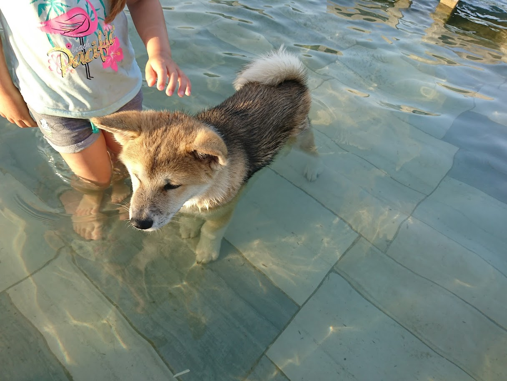
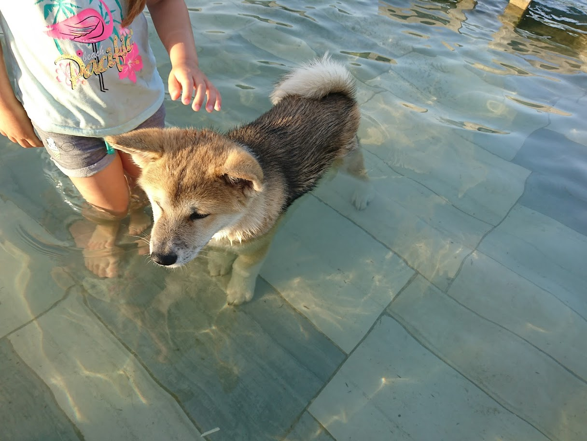
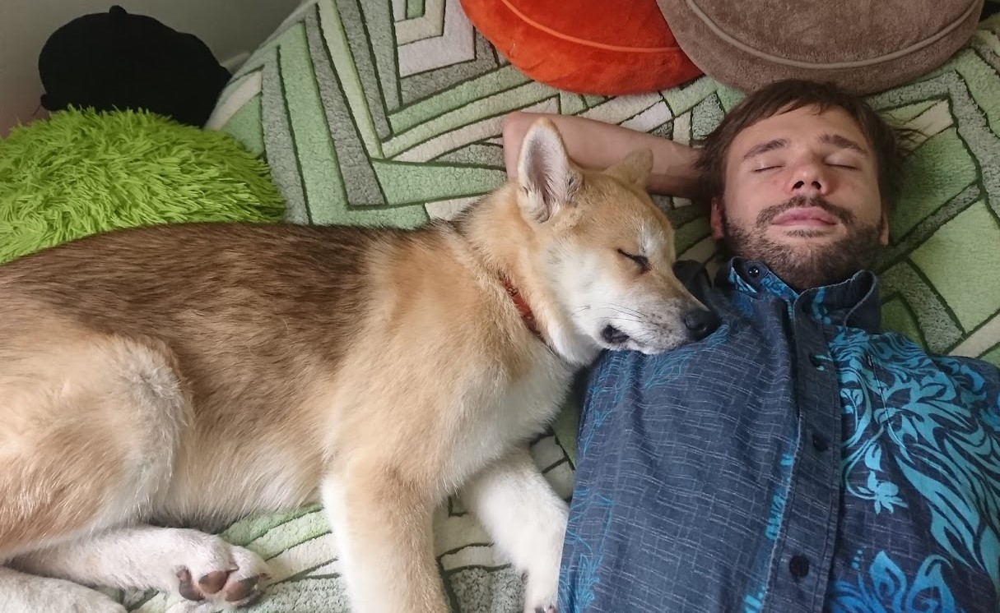
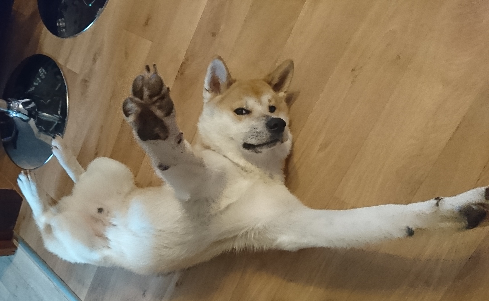
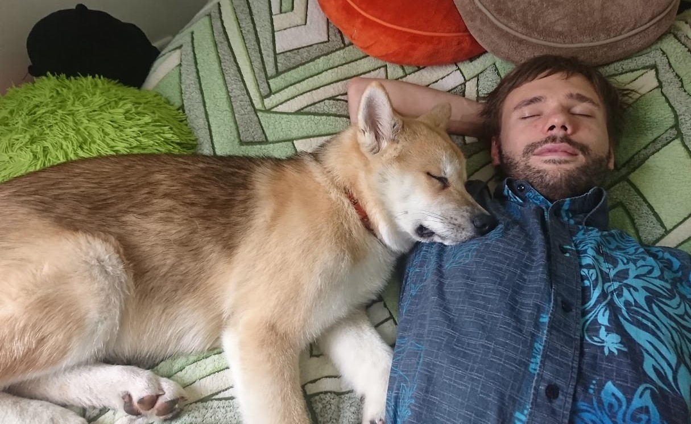
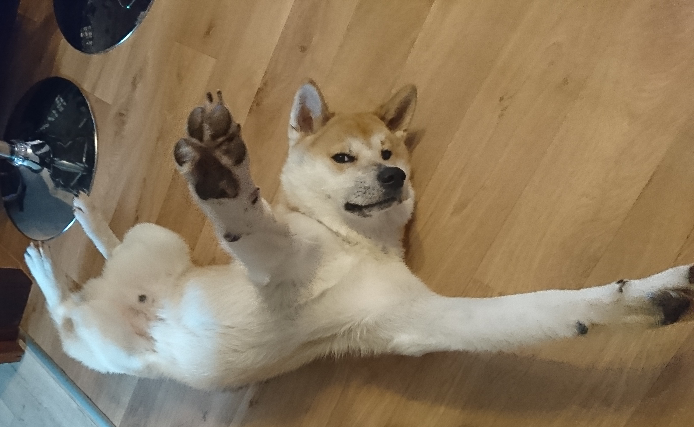
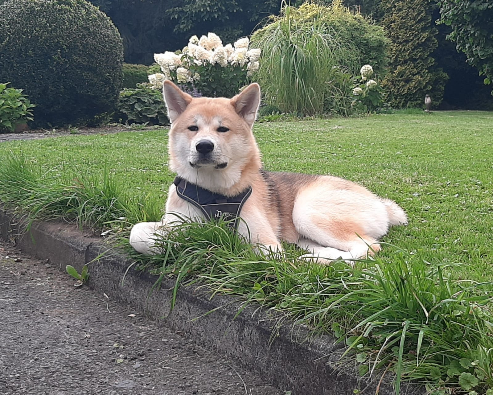
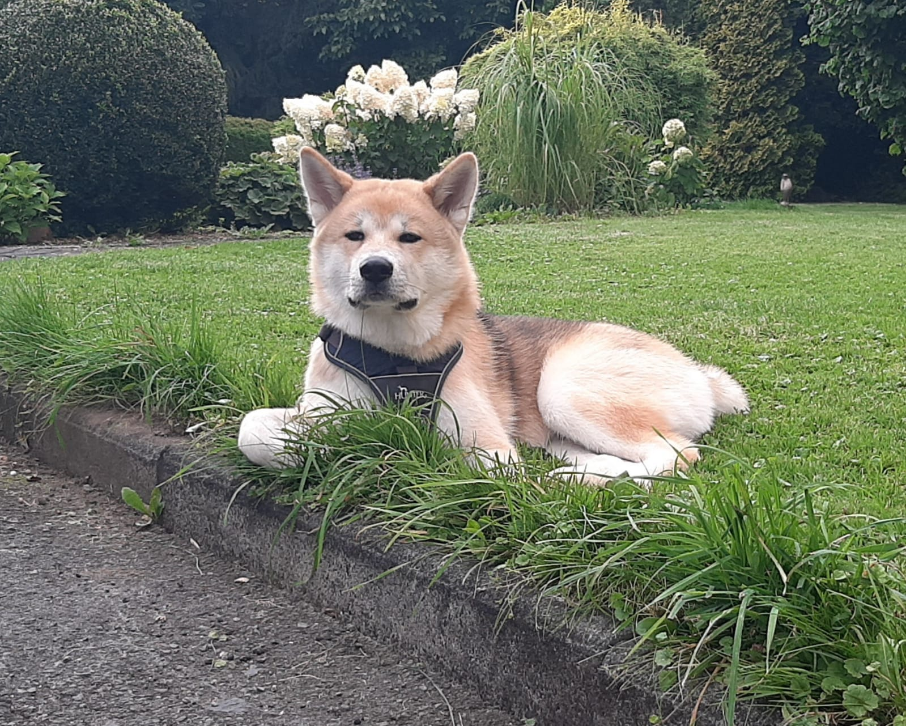

Main Facts About Akita
The Akita Inu is cute, calm, dignified, clean, quiet, sensitive, caring, family-oriented, physically powerful and protective. So it's understandable that he might be viewed as a desirable pet!
Discover their worldThe Guide
You probably know the most famous Japanese dog in the world called “Hachiko,” but are you familiar with his breed, the Akita Inu? I will introduce it to you through my knowledge and experience as a happy owner of this beautiful Japanese dog.
The arrival of “Bandita” in 2020 marked the beginning of an overflowing passion for the breed of Akita Inu.
I was also able to volunteer with the Dogs Coaching Association. For nearly a year and a half I learned a lot about Japanese dog breeds: the Shiba Inu, the Akita Inu and the American Akita. That is when I really realized, among other things, the importance of owner awareness and information sharing.
It is essential to learn about the breed before embarking on this crazy and wonderful adventure. This is what I am trying to convey through my various social networks under the name “AKITA THE REAL LIFE” on YouTube, Instagram and Facebook. I strive to share my passion, inform, advise, and guide Akita owners as best I can.
The Akita Inu is cute, calm, dignified, clean, quiet, sensitive, caring, family-oriented, physically powerful and protective. So it's understandable that he might be viewed as a desirable pet!
Discover their worldIf you want a puppy, you can avoid some negative traits by choosing the right breeder and the right puppy. Unfortunately, you usually can't tell whether a puppy has inherited temperament or health problems until he grows up.
If you need any advice, feel free to contact me
You can avoid some negative traits by choosing an adult dog from an animal shelter or rescue group. With them, you can easily see what you're getting, and plenty of adult Akitas have already proven themselves not to have negative characteristics.
Check out my blog about their everyday life
You can avoid some negative traits by training your Akita Inu to respect you. Sometimes it's easier to train your puppy (or adult dog) when you can see the correct training techniques in action.
Discipline and socialization is crutial to have a well-behaved Akita! Learn more

 

.JPG) 



 
